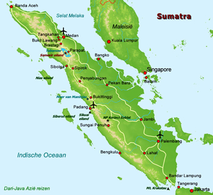

Indonesië
Sumatra
- Dag 1: Amsterdam - Medan Onze reis zal beginnen met een lange vlucht vanuit Amsterdam naar Medan. Tijdens deze reis zal er een overstap gemaakt worden in Maleisië. De gehele vlucht zal ongeveer 14 uur duren.
- Dag 2: Bohorok - Tangkahan Bij aankomst worden we door een chauffeur naar Tangkahan gebracht. De rest van de dag is ter vrije besteding.
- Dag 3: Medan - Tangkahan Vandaag gaan we de olifanten in dit Nationale Park ontmoeten en maken we een ritje van een uur. We kunnen er voor kiezen om een langere excursie te volgen waarbij we een 3 tot 4 uur durende jungletrek, een olifantenrit, het bad- en wasritueel meemaken en we kunnen tuben over de rivier.
- Dag 4: Tangkahan - Bohorok We worden door een chauffeur afgehaald waarna we direct doorrijden via de bergen naar het rustige dorpje Bohorok zodat we in de middag al midden in de natuur zitten. Hier bevindt zich het opvangcentrum voor de orang-oetans, Bukit Lawang en het Nationaal Park Gunung Leuser. we kunnen dan alvast een korte wandeling maken of heerlijk bijkomen van de lange reis op een terrasje langs de stromende rivier.
- Dag 5: Bohorok, Bukit Lawang - Jungletrek In de ochtend gaan we onder begeleiding van een lokale gids een wandeling van ca. drie uur door de dichtbegroeide jungle maken. Onderweg brengen we een bezoek aan het rehabilitatiecentrum voor orang- oetans. In de middag hebben we een vrij programma. We kunnen de omgeving op eigen gelegenheid verkennen of gaan tuben: de rivier afdalen met autobanden!
- Dag 6: Bohorok - Berestagi Vandaag reizen we verder naar Berastagi. Het dorpje dat tijdens de koloniale tijd al een geliefd vakantie oord was bij de Nederlanders, ligt op ca. 1300 meter hoogte op de Karo-hoogvlakte, een vruchtbare streek waar groente en fruit wordt verbouwd. Deze hoogvlakte ligt tussen twee indrukwekkende vulkanen, de Sinabung en de Sibayak.
- Dag 7: Berestagi Vandaag kunnen we er voor kiezen om samen met een gids de Sibayak te gaan beklimmen of we maken een wandeling in het dorp zelf, tussen de duizenden tuinen van de Karo Batak .
- Dag 8. Berastagi - Toba Meer Vandaag gaan we naar het eiland Samosir gelegen in het Tobameer, het grootste en diepste kratermeer van Zuidoost-Azië, dat is ontstaan door ëën van de hevigste vulkanische uitbarstingen uit de geschiedenis. Onderweg bezoeken we een oorspronkelijk Karo Batak-dorpje. Vervolgens komen we langs de fraaie, ruim honderd meter hoge waterval van Si Piso Piso met een onvergetelijk uitzicht over het Tobameer en brengen we een bezoek aan het Simalungun King's Palace waar we zien hoe een Batak koningsfamilie leefde. Het Tobameer wordt aan alle kanten omringd door stranden met naaldbomen, steile berghellingen en rotsformaties. Midden in het meer verrijst het eiland Samosir waar we met de veerboot heen varen. Danau Toba ligt op een hoogvlakte en vormt het hart van de Batak hooglanden. Het meer ligt op een hoogte van 900 m, heeft een oppervlakte van 1700 km² en is circa 450 m diep. Midden in dit grootste kratermeer ter wereld verrijst het eiland Samosir. De komende twee nachten logeren we in een hotel aan het meer.
- Dag 9: Tobameer We hebben vandaag een volle dag om er op uit te trekken. Het meer is het mythische thuisland van het Batakvolk. Deze mensen wonen hoog boven de grond in hun traditionele houten paalwoningen. De daken zijn gemaakt van palmbladeren, of in een meer moderne versie, van ijzeren dakplaten. Terwijl het vee rondloopt onder de huizen geeft een bamboeomheining veiligheid aan het dorp. Via het hotel kunnen we ook een boottochtje over het meer organiseren. we varen dan met een boot over het Toba meer naar Simanindo. Het huis van de voormalige Batak vorst, dat nu een museum is en een aantal rijkelijk versierde Batakhuizen hier vormen de achtergrond van een dansvoorstelling die we hier te zien krijgen. Daarna varen we naar een klein eilandje waar je lunchen en zwemmen. Op de terugweg stopt de boot bij Ambarita waar de vergaderplaats en executieplek uit vroegere tijden valt te bezichtigen.
- Dag 10: Tobameer - Medan - Yogyakarta ‘s ochtends vroeg nemen we de boot terug naar Parapat. Na een rit van een uur of 6 worden we afgezet bij de luchthaven van Medan en vliegen we door naar Yogyakarta.



Java
test

Bali
test